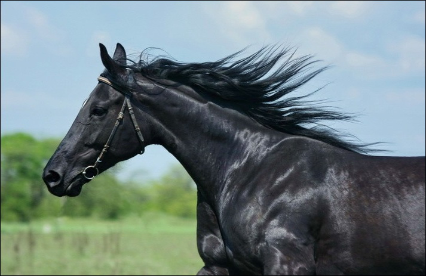
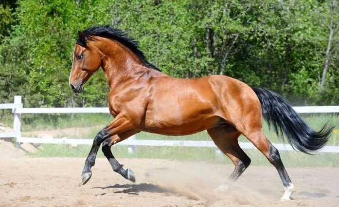

 Створені раніше за інші породи в Середній Азії та на Близькому Сході. Серед найдавніших — ахалтекінська, іомудська та арабська. В країнах Західної Європи їх використовували для перетворення важкого рицарського коня у кавалерійського.
Ці коні великих розмірів, високі, з сухою будовою тіла, добре розвиненими легенями і серцем, енергійні, з добрими скаковими здібностями. Масть гніда, ворона, руда, сіра. Цінними ознаками є скороспілість, стійкість у передаванні потомству якості породи і жвавість. Дистанцію 1000 м долають за 53,3 с, 1600 — 1 хв 31,8 с, 2400 м — 2 хв 23 с. Серед основних недоліків — зніженість, недостатня витривалість, вибагливість до умов годівлі та утримання, невисока плодючість.
 Українська верхова порода створена складним відтворним схрещуванням місцевих поліпшених і угорських кобил з жеребцями тракененської, ганноверської, англійської чистокровної та російської верхової порід. Роботу з виведення породи провадили з 1945 по 1990 р., приділяючи велику увагу спортивному тренінгу молодняку, а також випробуванням на подолання перешкод.
Вгору